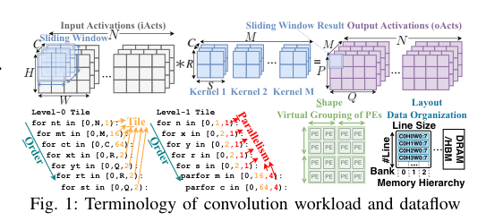
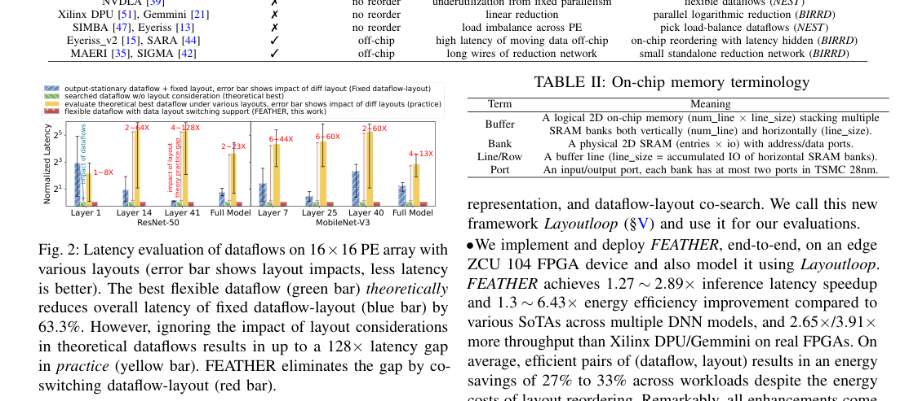
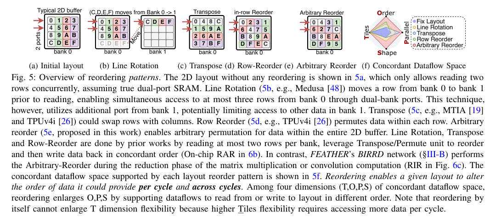
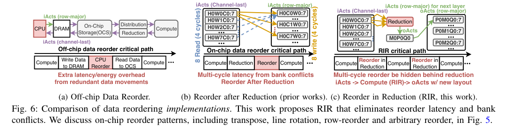
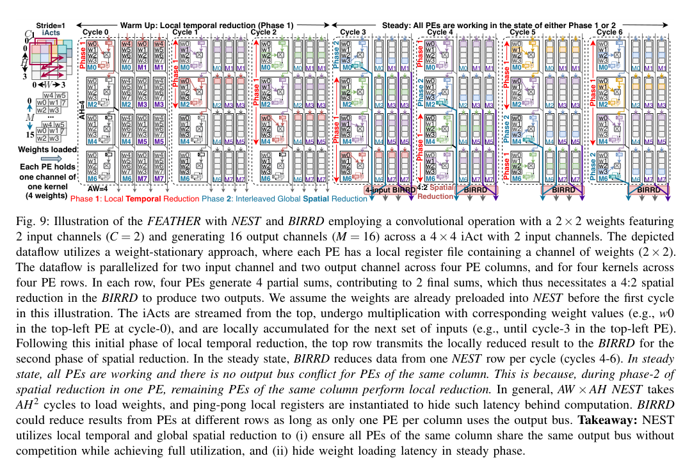
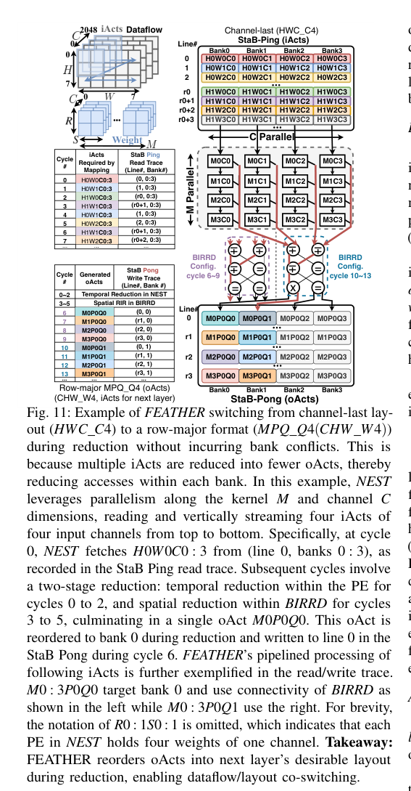
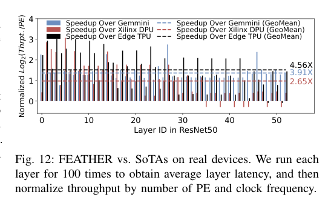

← Daily Papers
本报告由大模型自动生成，可能存在理解、归纳或数据转述错误；请以原论文为准。
FEATHER: A Reconfigurable Accelerator with Data Reordering Support for Low-Cost On-Chip Dataflow Switching Jianming Tong, Anirudh Itagi, Prasanth Chatarasi, Tushar Krishna · 2024 ACM/IEEE 51st Annual International Symposium on Computer Architecture (ISCA) · 2024 · 原文 · PDF
报告模型：gemini-3.1-pro-preview / high
这是一篇关于深度学习硬件加速器架构设计的学术论文，题为《FEATHER: A Reconfigurable Accelerator with Data Reordering Support for Low-Cost On-Chip Dataflow Switching》（FEATHER：一种支持数据重排的低成本片上数据流切换可重构加速器）。文章发表于 2024 年 5 月的 arXiv。
为了帮助理解全文，首先补充一些基础背景（背景补充）：在深度学习硬件中，PE（Processing Element，处理单元，单位：原文未说明） 是执行核心算术操作（如 MAC ，原文未定义全称，指代乘加单元，单位：原文未说明）的基础计算模块。SRAM（Static Random-Access Memory，静态随机存取存储器，单位：原文未说明） 是常用的片上缓存技术，其物理实现受限于晶体管工艺，通常提供有限的读写端口（例如 TSMC 28nm 工艺通常提供双端口 SRAM，这属于物理和硬件层面的强制约束）。加速器通常将多个 SRAM 组合成一个逻辑上的二维缓存，其中包含多个 Bank（存储体，单位：原文未说明） ，每个 Bank 可以独立寻址，但单个 Bank 内同时能响应的读写请求受限于其物理端口数。
以下是按论文逻辑结构展开的详细介绍。
一、 介绍与背景（Introduction & Background）
问题背景与系统全貌
现代机器学习（ML）尤其是深度神经网络（DNNs），由结构和尺寸各异的层（如不同卷积核大小、不同通道数的卷积层）组成。为了在由成千上万个 PE 组成的加速器上高效执行这些层，硬件需要采用不同的数据流（Dataflow） 。
数据流是指控制数据（输入、权重、输出）在存储层次和计算单元之间移动与复用的策略。作者结合图 1，将数据流的具体优化维度定义为 TOPS 四个方面（由软件、编译器或作者做出的设计选择）：

Figure 1 · 原文 PDF 第 1 页
(T)iling（分块） ：由于片上存储有限，将输入激活值（iActs，即特征图数据，单位：原文未说明）的维度切分为更小的数据块。(O)rdering（循环排序） ：调整嵌套循环的执行顺序以提高某些数据的驻留（Stationary）复用率。(P)arallelism（并行度） ：在任意没有数据依赖的维度上展开并行计算。(S)hape（形状） ：对物理 PE 阵列进行虚拟的逻辑分组。
核心冲突：理论与实践的性能鸿沟
理论上，针对每一层切换到最优数据流，可以将延迟降低多达两个数量级。然而，数据流的切换严重依赖于片上缓存的数据布局（Data Layout） 。数据布局是指数据在逻辑二维缓存中的组织方式，例如文中定义的 CHW_W4H2C2（这是一种命名规则：下划线前的 CHW 表示在不同数据行之间按 C （通道数，单位：原文未说明）、H （高度，单位：原文未说明）、W （宽度，单位：原文未说明）的顺序排列；下划线后的 W4H2C2 表示在同一行内部，将 4 个 W、2 个 H、2 个 C 的元素展平存放）。
如果当前的数据流需要同时读取多个数据，而这些数据在当前的数据布局下恰好位于同一个 SRAM Bank 中，且请求数量超过了该 Bank 的物理读取端口数（例如 4 个数据同属一个双端口 Bank），就会发生Bank 冲突（Bank Conflict） 。这会导致读取延迟，迫使计算单元停机等待（Stall），作者将这种数据流与布局不匹配的状态定义为Discordant（不协调） ，反之则为 Concordant（协调） 。如图 2 所示，如果不考虑布局带来的 Bank 冲突，理论上最优的数据流在实际执行时可能会面临高达 128 倍的性能降级。

Figure 2 · 原文 PDF 第 2 页 现有技术的局限性
为了扩大协调数据流的设计空间，必须对片上数据进行重排。作者根据图 5 定义了几种硬件重排模式：

Figure 5 · 原文 PDF 第 5 页
Line Rotation（行旋转） ：将冲突的行移动到其他空闲的 Bank 中。Transpose（转置） ：交换行与列。Row Reorder（行内重排） ：在单行内部打乱数据顺序。Arbitrary Reorder（任意重排） ：本文提出的模式，允许在整个二维缓存中任意交换数据位置，从而完全解锁 TOPS 灵活性。
现有支持重排的加速器（如谷歌 TPUv4、Meta MTIA）大多采用RAR（Reorder After Reduction，归约后重排） 机制。归约（Reduction）是指将多个部分和（Partial Sums，单位：原文未说明）相加得到最终输出激活值（oActs，Output Activations，单位：原文未说明）的过程。RAR 机制在数据归约完成、写回片上缓存后，再专门花费时钟周期将其读取出来，通过专用的重排单元改变布局，然后再写回。这种方式将重排暴露在了执行的**关键路径（Critical Path）**上，带来了高昂的延迟和能耗开销（如图 6b 所示），导致许多工业界加速器（如 Xilinx DPU）宁愿妥协使用单一的固定数据流，也拒绝引入重排机制。

Figure 6 · 原文 PDF 第 5 页 二、 FEATHER 架构设计（Method: FEATHER Overview）
为了解决上述问题，作者提出了 FEATHER 加速器，其核心理念是提出一种全新的重排机制：RIR（Reorder In Reduction，归约中重排） 。RIR 的思想是，在乘加计算产生的多个部分和流向输出缓存的加法归约过程中，利用归约网络本身的路由能力，直接将结果写入下一个计算层所期望的 Bank 目标位置。这样就将重排操作完全隐藏在了归约计算的时间内，消除了关键路径上的延迟。
FEATHER 的架构主要由以下几层部件组成，数据在其中形成流水线：
1. 存储层
StaB（Stationary Buffer，驻留缓存，单位：原文未说明） ：用于存放本层不需要频繁移动的张量（如卷积中的 iActs）。它由 A W A W Ping-pong（乒乓） 机制，即计算单元读取 Ping 区时，下一层的数据写入 Pong 区。StrB（Streaming Buffer，流式缓存，单位：原文未说明） ：用于存放需要流式输入的张量（如权重）。为了节省面积，它只包含单个具有高带宽的数据行，不进行复杂的布局管理。
2. 计算层：NEST (Neural Engine with Spatial forwarding and Temporal reduction)
NEST 是一个二维 PE 阵列。传统二维阵列的数据流死板，而传统一维阵列（如 MAERI）虽然灵活，但需要极其庞大的全连接归约网络。NEST 采用了一种两阶段的时分复用机制（见图 9）：

Figure 9 · 原文 PDF 第 8 页
阶段 1（局部时间归约） ：每个 PE 内部设有寄存器，优先在本地循环累加部分和。阶段 2（交错全局空间归约） ：当 PE 完成局部累加后，将结果输出到全局列总线上。为了避免同列的多个 PE 同时输出导致总线冲突，NEST 利用流水线调度，确保每一行 PE 错开时间使用总线。这种设计使得二维阵列可以像一维阵列一样灵活分组，同时大幅节省了总线布线面积。
3. 归约与重排层：BIRRD (Butterfly Interconnect for Reduction and Reordering in Dataflows)
这是实现 RIR 机制的核心硬件。从 NEST 传出的部分和进入 BIRRD，BIRRD 将其相加并发送到 StaB 的指定 Bank。
拓扑结构 ：BIRRD 采用了背靠背的蝶形网络（Butterfly Network）。它由 2 × log 2 ( A W ) A W = 4 A W / 2 算法逻辑 ：关于各级之间的连线关系，作者在 Algorithm 1 中给出了伪代码。此处的输入是 A W reverse_bits 接收一个端口索引 j 微架构 ：BIRRD 的每个 2×2 交换节点被称为 “Egg”，内部包含一个加法器，受一个 2-bit 的配置字控制，可执行四种操作：直通（Pass）、交换（Swap）、左累加输出（Add-Left）和右累加输出（Add-Right）。通过配置这些 Egg 的状态，BIRRD 既能实现任意分组的部分和归约，又能将结果多播或路由到任意输出端口（即实现了 Arbitrary Reorder 任意重排）。这些控制配置是离线生成的，并在运行时由指令缓存（IB）下发。
通过 NEST 匹配写端口数，加上 BIRRD 的 RIR 机制，FEATHER 可以在消除 Bank 冲突的同时，隐式地完成数据布局的转换（例如将通道优先的 HWC_C4 布局，在计算完毕写回缓存时直接变成下一层需要的行优先 MPQ_Q4 布局，其中 M 为输出通道/卷积核数，单位：原文未说明；P 、Q 原文未显式定义全称，指代输出特征图的空间维度，单位：原文未说明，见图 11）。

Figure 11 · 原文 PDF 第 10 页 三、 跨层协同与 Layoutloop 框架（Layoutloop）
这里展现了体系结构与 EDA（电子设计自动化）/编译层面的紧密双向联系。FEATHER 虽然提供了硬件能力，但面对一个具体的卷积层，有 10 36 10 8 10 8 8 ! × 分解因数可能性
为此，作者扩展了现有的搜索工具 Timeloop，提出了 Layoutloop 。
架构参数的抽象传递 ：Layoutloop 将物理 SRAM 阵列抽象为一个二维参数组 num_line × line_size（单位：原文未说明），并提取出一个架构约束 conflict_depth（表示单个 Bank 内的总行数，单位：原文未说明）。此处的建模假设是将复杂的物理组织抽象为逻辑二维数组并按行访问，存在一定的信息损失。代价模型的构建与疑点 ：Layoutloop 会在搜索时计算某一数据流访问存储的模式。这里文章给出了一个计算由于 Bank 冲突导致降速（Slowdown）的惩罚公式。
原文疑点标注 ：论文原文称 “引入了 max ( N P / N L , 1 ) N P N L 笔误 。因为当访问的行数 N L N P max ( 2 / 4 , 1 ) = max ( 0.5 , 1 ) = 1 max ( N L / N P , 1 )
协同优化目标 ：Layoutloop 以 EDP（Energy-Delay-Product，能耗延迟乘积，同时综合考量执行时间和能量消耗的物理指标，单位：原文未说明） 作为目标函数，穷举布局空间并结合剪枝随机搜索数据流，最终为 FEATHER 输出针对该层的优化（optimized）数据流和全局最优（global optimal）布局配置。
四、 实验评估（Evaluation）
实验部分验证了 FEATHER 设计的有效性。作者使用 Verilog 和高层次综合（HLS）实现了 FEATHER，并在 TSMC 28nm 工艺下进行了物理综合，同时在真实 FPGA 开发板（Xilinx ZCU104）上进行了端到端部署。评测对象涵盖了云端负载（BERT）和边缘端负载（ResNet-50, MobileNet-V3）。
实验结果与现象证明：
真实设备对比（表 4，图 12） ：在吞吐量（按 PE 数量和时钟频率归一化后）上，FEATHER 相比于工业界固化数据流的 ASIC 和 FPGA 设计（如 Gemmini, Xilinx DPU, Edge TPU）实现了 2.65 倍到 4.91 倍的加速。这直接证明了：固定的数据流在遇到通道数等维度无法被物理阵列尺寸整除时，会导致利用率急剧下降；而 FEATHER 灵活的 TOPS 维度有效避免了计算资源的闲置。
Figure 12 · 原文 PDF 第 11 页 Layoutloop 分析对比（图 13） ：在分析模型中与学术界先进架构（NVDLA, Eyeriss, SIGMA）对比：
与同样支持全灵活数据流但必须将数据移回片外 DRAM 进行重排的 SIGMA 相比，FEATHER 节省了大量搬运能耗。在计算密度较低的 MobileNet-V3 中，SIGMA 暴露出了 24% 的片外重排延迟，而 FEATHER 利用 RIR 机制完全隐匿了这部分开销，实现了 1.7 倍的速度提升和将近 2 倍的能效提升。
针对其他支持片上特定重排（如线旋转、转置）的变体，FEATHER 的 Arbitrary Reorder（任意重排）能更好地解决复杂多维并行带来的 Bank 冲突。
面积与物理实现（图 14） ：这是架构设计的关键权衡。BIRRD 网络相较于一维加速器（如 SIGMA）中使用的 FAN （原文未定义全称，指代 SIGMA 的归约网络，单位：原文未说明）减少了 94% 的资源消耗。由于它只需服务于二维阵列的列级输出，在最终 TSMC 28nm 的物理版图中，BIRRD 仅占整个芯片面积的 4%，同时支持高达 1.5 GHz 的主频，完全没有成为系统瓶颈。
五、 全文主线与局限性总结（Conclusion & Limitations）
贯穿全文的主线 ：深度学习加速器为了追求极高的计算效率，必然走向针对不同层定制不同“数据流”的道路。但这引发了一个系统性死结：改变数据流就会遭遇“数据布局”不匹配导致的片上存储访问冲突。以往的设计要么妥协性能使用固定数据流，要么忍受高昂的显式数据重排开销。本文通过观察到“部分和在加法归约的过程中本身就需要硬件网络进行路由”这一特点，巧妙地将“重排布局”的操作搭了“归约路由”的便车，发明了 RIR 机制和 BIRRD 网络。结合软硬件协同搜索工具 Layoutloop，FEATHER 最终在只增加 6% 面积的极低代价下，打破了数据流切换的性能壁垒。
关键假设与局限性（不能被过度推广的结论） ：
静态模型假设 ：文章在第二章 D 节指出，针对权重的最优布局是在离线状态下计算并重排好的，运行时只对动态生成的输入/输出激活值（iActs/oActs）进行重排。这要求被加速的 ML 模型在部署前其结构必须是固定且完全已知的，对于高度动态的神经网络（如每步都在改变图拓扑的模型）可能不适用。控制器优化空间 ：作者在评估部分（VI-B-2）诚实地承认，在处理输入通道和卷积核数量极大的深层网络时，尽管 FEATHER 实现了 100% 的稳态利用率，但绝对性能略逊于 Xilinx DPU。这说明 FEATHER 目前的控制器（Controller）设计尚未达到工业界的极致优化水平，流水线的启动和排空开销在某些特定负载下仍有改进空间。单一目标工艺 ：所有功耗与时序的物理论证均基于 TSMC 28nm（一种较为成熟但较旧的工艺）。在更先进的工艺节点（如 5nm/3nm）下，连线延迟与逻辑门延迟的比例将发生剧变，BIRRD 网络的物理实现特性和时序结论是否依然成立，原文并未涉及。